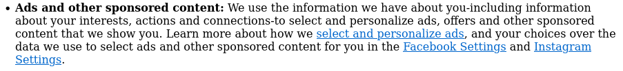

Redes sociais são muito usadas hoje em dia, bilhões de pessoas usam
diariamente, mas essas redes sociais são uma caixa de skinner do século XII,
porque as redes sociais censuram e destroem os seus usuários indiretamente.
Um exemplo foi comigo mesmo. Se eu comento em algum vídeo do youtube, eu tenho
que rezar pro youtube não deletar o meu comentário sem motivo.
Essa prática idiota de deletar comentários me deixa com medo de postar
mais comentários nessa plataforma, sendo um método de censura.
Redes sociais fazem isso e também induzem o usuário a ficar usando ela
diariamente ou pior ainda, todo santo segundo. Isso acontece porque
Essas redes sociais tem uma tendência de sempre colocar a coisa mais recente
pros usuários sempre consumirem o conteúdo mais recente e ficar "antenado" em tudo.
Um Meteodo que eles fazem o usuário usar a rede social toda hora é um o Scroll Infinito.
Scroll infinito é a rede social não ter um final em suas páginas como a principal, recomendações
de vídeos etc. E isso é uma coisa horrível pra saúde do usuário, porque ele pode falar por exemplo
que vai usar X rede social só pra ver um vídeo e no final gastar horas e mais horas da vida com nada.
Aí você vem diz para mim:
-Slay, não tem como ficar pior certo?
E Eu te digo:
-TEM
Além disso, essas redes sociais pegam suas informações pessoais e guardam pra ou usar suas
informações pessoais pra usar pra benefício deles colocando propagandas exclusivas pra você

(exemplo da política de privacidade do facebook)
ou elas VENDEM SUAS INFORMAÇÕES PARA OUTRAS EMPRESAS. Se você não acha isso creppy pra
caralho você é estranho.
Em conclusão. Redes sociais te censuram, pegam suas informações e te viciam nela, esse é uma coisa
que eu não recomendo à ninguém usar de forma alguma.